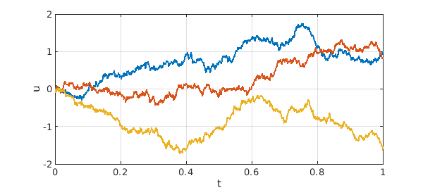

The new Chebfun release v5.7.0 brings with it a new set of capabilities: smooth random functions. The commands are randnfun, randnfun2, randnfunsphere, and randnfundisk. (There is not yet a randnfun3.) Each of these returns a band-limited function defined by a Fourier series with independent random coefficients; a parameter $\lambda$ specifies the minimal wavelength. For information about the mathematics, see [1] and also chapter 12 of [2].
help randnfun
RANDNFUN Smooth random function
F = RANDNFUN(LAMBDA) returns a CHEBFUN on [-1,1] with maximum
frequency <= 2pi/LAMBDA and standard normal distribution N(0,1)
at each point. F can be regarded as a sample path of a Gaussian
process. It is obtained by calling RANDNFUN(LAMBDA, 'trig') on an
interval 20% longer and restricting the result to [-1,1].
RANDNFUN(LAMBDA, DOM) returns a result with domain DOM = [A, B].
RANDNFUN(LAMBDA, N) returns a quasimatrix with N independent columns.
RANDNFUN(LAMBDA, 'big') normalizes the output by dividing it by
SQRT(LAMBDA/2), so white noise is approached in the limit LAMBDA -> 0,
with an indefinite integral corresponding to standard Brownian motion.
RANDNFUN(LAMBDA, 'trig') returns a random periodic function. This
is defined by a finite Fourier-Wiener series with independent normally
distributed coefficients of equal variance.
RANDNFUN(LAMBDA, 'complex') returns a complex random function. The
variance is the same as in the real case (i.e., not twice as great).
RANDNFUN() uses the default value LAMBDA = 1. Combinations such
as RANDNFUN(DOM) and RANDNFUN('big', LAMBDA) are allowed so long as
N, if present, is preceded by an explicit specification of LAMBDA.
Reference: S. Filip, A. Javeed, and L. N. Trefethen, "Smooth random
functions, random ODEs, and Gaussian processes," SIAM Review, 61
(2019), pp. 185-205.
Examples:
f = randnfun(0.1); std(f), plot(f)
plotcoeffs(f, '.'), xlim([0 200])
X = randnfun(.01,2); cov(X)
s = randi(100);
rng(s), f1 = randnfun(0.5,'big',[0 10],3);
rng(s), f2 = randnfun(0.1,'big',[0 10],3);
plot(cumsum(f1),'k',cumsum(f2),'r')
plot(cumsum(randnfun(.01,[0 5],'complex','big'))), axis equal
See also RANDNFUN2, RANDNFUNSPHERE, RANDNFUNDISK, SMOOTHIE.
These commands make it easy to compute sample paths of random ODEs in Chebfun, that is, of ODEs defined by smooth random coefficients. As $\lambda \to 0$, we approach the limit of stochastic DEs (SDEs) in their Stratonovich (as opposed to Itô) formulation. Thus Chebfun provides an easy window into the phenomena that make SDEs so fascinating and so important. Note that what Chebfun solves is a random ODE (based on band-limited randomness), not an SDE (based on band-unlimited randomness, i.e., white noise, a notion made precise through the formulation of a Wiener process, also known as Brownian motion). In the limit $\lambda\to 0$ they are the same (though Chebfun becomes quite an inefficient tool if you try to get too close to that limit).
For ODE-related studies, one should always call randnfun and its cousins with the flag 'big'. This multiplies the random function by $(\lambda/2)^{-1/2}$, meaning that its amplitude grows without bound as $\lambda\to 0$. This is what is needed for random ODEs to approximate SDEs.
Here we give just the simplest example. If $f$ is a normalized random function, then the equation $$ u' = f $$ has the indefinite integral of $f$ as its solution. We call this a "smooth random walk". If $\lambda$ is small enough, it looks to the eye like true Brownian motion, and as $\lambda \to 0$, that is what it approaches. For finite $\lambda$ there are no mathematical technicalities to worry about; it is simply an ODE. Precise statements about the limit $\lambda\to 0$ require care, however, and stochastic analysts would write the equation above in a very different form, $$ dX_t = d W_t. $$
Here are three smooth random walk sample paths for $t\in [0,1]$ with $u(0) = 0$ and $\lambda = 0.001$.
tic rng(0) u = randnfun(0.001,[0 1],3,'big'); plot(cumsum(u)) grid on, ylim([-2 2]) xlabel t, ylabel u

total_time_in_seconds = toc
total_time_in_seconds = 1.005472000000000
References:
[1] S. Filip, A. Javeed, and L. N. Trefethen, Smooth random functions, random ODEs, and Gaussian processes, SIAM Review, 61 (2019), 185--205.
[2] L. N. Trefethen, Approximation Theory and Approximation Practice, Extended Edition, SIAM, 2019.